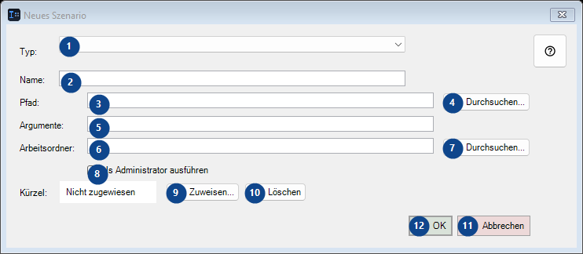
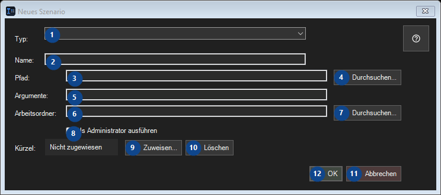

Neues Szenario
Zweck
Starten Sie Ihre Programme, Skripte und yt-dlp-Downloads über das Tray, diese Tabelle, ein Tastenkürzel oder die Taskleiste.


Reihenfolge
Lesen Sie die nummerierten Erklärungen, wählen Sie die benötigten Werte und fahren Sie mit dem Fensterbefehl fort.
Elemente
1. Typ:
Wählen Sie den Wert zur benachbarten Beschriftung oder geben Sie ihn ein. Prüfen Sie ihn vor dem Fortfahren.
Ihre Tastenkürzel2. Typ:
Wählen Sie den Wert zur benachbarten Beschriftung oder geben Sie ihn ein. Prüfen Sie ihn vor dem Fortfahren.
Ihre Tastenkürzel3. Pfad:
Wählen Sie den Wert zur benachbarten Beschriftung oder geben Sie ihn ein. Prüfen Sie ihn vor dem Fortfahren.
Ihre Tastenkürzel4. Durchsuchen...
Nutzen Sie diesen Befehl für die genannte Aktion. Lesen Sie eine Bestätigung, bevor Sie zustimmen.
Ihre Tastenkürzel5. Pfad:
Wählen Sie den Wert zur benachbarten Beschriftung oder geben Sie ihn ein. Prüfen Sie ihn vor dem Fortfahren.
Ihre Tastenkürzel6. Pfad:
Wählen Sie den Wert zur benachbarten Beschriftung oder geben Sie ihn ein. Prüfen Sie ihn vor dem Fortfahren.
Ihre Tastenkürzel7. Durchsuchen...
Nutzen Sie diesen Befehl für die genannte Aktion. Lesen Sie eine Bestätigung, bevor Sie zustimmen.
Ihre Tastenkürzel8. Als Administrator ausführen
Nutzen Sie diesen Befehl für die genannte Aktion. Lesen Sie eine Bestätigung, bevor Sie zustimmen.
Ihre Tastenkürzel9. Zuweisen...
Nutzen Sie diesen Befehl für die genannte Aktion. Lesen Sie eine Bestätigung, bevor Sie zustimmen.
Ihre Tastenkürzel10. Löschen
Nutzen Sie diesen Befehl für die genannte Aktion. Lesen Sie eine Bestätigung, bevor Sie zustimmen.
Ihre Tastenkürzel11. Abbrechen
Nutzen Sie diesen Befehl für die genannte Aktion. Lesen Sie eine Bestätigung, bevor Sie zustimmen.
Ihre Tastenkürzel12. OK
Nutzen Sie diesen Befehl für die genannte Aktion. Lesen Sie eine Bestätigung, bevor Sie zustimmen.
Ihre Tastenkürzel